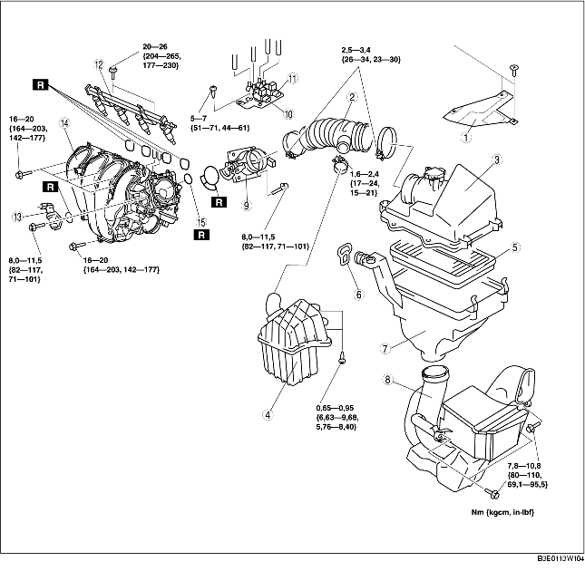

VERWIJDEREN/PLAATSEN LUCHTINLAATSYSTEEM [LF]
B3E011300113W10
-
Waarschuwing
-
• Als de motor en het luchtinlaatsysteem heet zijn, kunnen ze ernstige brandwonden veroorzaken. Zet de motor uit en wacht tot beide afgekoeld zijn alvorens het luchtinlaatsysteem te verwijderen.
-
• Lekkage uit de brandstofleidingen en uit het onder druk staande brandstofsysteem is gevaarlijk. De brandstof kan ontbranden waardoor ernstige verwondingen en schade kunnen ontstaan. Brandstof kan tevens huid en ogen irriteren. Volg om dit te voorkomen altijd de 'Veiligheidsprocedures voor brandstofleidingen' op (zie VOORZORGSMAATREGELEN VOOR ONDERHOUD). (Zie PROCEDURE VOOR REPARATIE [ZJ, Z6, LF].)
1. Verwijder de afdekplaat. (Zie VERWIJDEREN/PLAATSEN AFDEKPLAAT [LF].)
2. Verwijder de accukap en het luchtkanaal. (Zie VERWIJDEREN/PLAATSEN ACCU [LF].)
3. Verwijder het onderpaneel.
4. Neem de minkabel van de accu los.
5. Verwijder de onderdelen in de aangegeven volgorde, zie de tabel.
6. Plaats de onderdelen in omgekeerde volgorde.
7. Voer de "PROCEDURE NA REPARATIE" uit. (Zie PROCEDURE NA REPARATIE [ZJ, Z6, LF].)

.
|
1
|
Afdekkap
|
|
2
|
Luchtslang
|
|
3
|
Luchtfilterdeksel
|
|
4
|
Resonantiekamer (zijde luchtfilter)
|
|
5
|
Luchtfilterelement
|
|
6
|
Beugel
|
|
7
|
Luchtfilterhuis
|
|
8
|
Luchtinlaat
|
|
9
|
Smoorklephuis
|
|
10
|
Magneetklep variabele luchtinlaat
|
|
11
|
Magneetklep variabel luchtwervelsysteem
|
|
12
|
Brandstofgalerij
|
|
13
|
IAC-klep
|
|
14
|
Inlaatspruitstuk
|
|
15
|
Pakking EGR-leiding
|
Aanwijzing voor verwijderen luchtinlaat
1. Verwijder de voorbumper voor het verwijderen van de luchtinlaat. (Zie VERWIJDEREN/PLAATSEN VOORBUMPER.)
Aanwijzing voor verwijderen - inlaatspruitstuk
1. Verwijder de peilstokhouder. (Zie CARTERPAN VERWIJDEREN/PLAATSEN [LF].)
2. Verwijder de gaskabelsteun van het inlaatspruitstuk.
Aanwijzing voor plaatsen - luchtfilterhuis
-
Aanwijzing
-
• Controleer, voordat het luchtfilterhuis wordt geplaatst, of de bevestigingsrubbers op de accusteun er niet afgevallen zijn.
-
• Het plaatsen van het luchfilterhuis in de bevestigingsrubbers wordt vergemakkelijkt door de zeepsop aan te brengen op de onderdelen.
1. Controleer of de twee bevestigingsrubbers op de accusteun zijn geplaatst.
2. Plaats het luchtfilterhuis in de bevestigingsrubbers.
Aanwijzing voor plaatsen - beugel
1. Zet het zijpaneel van de luchtgeleider en het luchtfilterhuis vast met de beugel, zoals in de afbeelding is aangegeven.
Aanwijzing voor plaatsen - luchtslang
1. Lijn de merktekens op het smoorklephuis en de luchtslang uit.